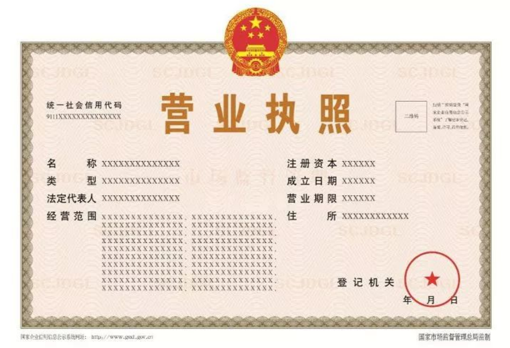
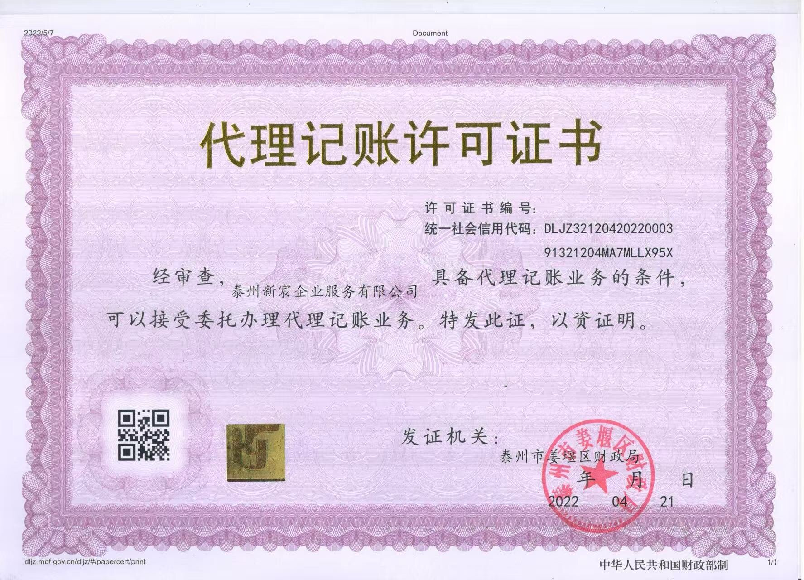

代办注册公司 / 个体户
新宸企业服务深耕姜堰工商注册领域多年，熟悉2026年最新公司注册政策与姜堰区、海陵区、高港区等泰州各区市的审核标准差异。提供姜堰有限责任公司注册、姜堰个体户营业执照代办、姜堰分公司注册等全流程服务，快至3个工作日即可领取营业执照。
- 姜堰内资公司注册（有限责任公司、股份有限公司、个人独资企业、合伙企业）
- 姜堰个体工商户注册（营业执照代办、税务登记、开票申请）
- 姜堰特殊行业注册（同步代办食品经营、医疗器械、劳务派遣等许可证）
- 姜堰合规注册地址托管（工商备案地址，有效规避地址异常）
- 银行开户预约协助、刻章备案
- 支持线上提交材料、线上签字，法人无需到场

代理记账
新宸企业服务持有财政局核发的正规《代理记账许可证》，为姜堰小规模纳税人和一般纳税人企业提供专业代理记账服务。采用智能系统+人工复核双轨模式，确保账务清晰、申报准时、税负合理。
- 原始凭证整理与审核
- 记账凭证编制与账簿登记
- 资产负债表、利润表、现金流量表月度出具
- 增值税、企业所得税、个人所得税、印花税、附加税费全税种申报
- 工商年报公示与税务年报报送
- 财税风险预警：自动识别税负异常、发票风险
- 凭证按年度装订成册，便于查阅与审计

公司变更
新宸企业服务提供全面的姜堰公司变更代办服务，涵盖公司运营中可能涉及的所有变更需求，帮助姜堰企业及时完成工商变更登记，确保经营信息与备案信息一致。
- 公司法人变更
- 股权变更（股权转让）
- 注册地址变更
- 经营范围变更
- 公司名称变更
- 注册资本变更（增资/减资）
公司注销
新宸企业服务提供姜堰公司注销全程代办服务，包括简易注销和疑难注销。帮助企业合规退出市场，避免因未及时注销产生税务异常和工商黑名单等后果。
- 姜堰公司简易注销（适用未开业或无债权债务企业）
- 姜堰公司一般注销（含清算组备案、登报公告、税务注销、工商注销）
- 姜堰公司疑难注销（含税务异常处理、账务清理）
- 姜堰个体户注销代办
营业执照异常解除
新宸企业服务专业处理姜堰企业工商异常和税务异常问题。24小时内出具处置方案，帮助姜堰企业恢复合规状态，避免影响企业招投标、银行贷款等正常经营活动。
- 工商经营地址异常移出（地址核查、材料补充）
- 税务异常解除（逾期申报处理、税务罚款协商）
- 工商年报补报及异常移出
- 旧账梳理与补记账
企业年报
新宸企业服务为姜堰企业提供工商年报公示和税务年报报送服务，确保企业按时完成年报义务，避免因未按时年报被列入经营异常名录。
- 工商年报公示（国家企业信用信息公示系统填报）
- 税务年报报送（企业所得税汇算清缴）
- 年报逾期补报
财税咨询
新宸企业服务为姜堰企业提供专业的财税咨询服务，帮助企业在合规框架内优化税务结构，降低经营成本。
- 日常财税咨询（政策解读和账务处理疑问解答）
- 税务筹划建议（合法合规前提下优化税负结构）
- 优惠政策对接（协助申请小微企业税费减免和创业补贴）
- 财税风险诊断（识别潜在风险点，出具优化建议报告）
经营许可证代办（10大类别）
新宸企业服务在姜堰代办各类经营许可证，涵盖以下十大类别。姜堰企业找新宸一家即可办齐全部证照。
市场准入类
营业执照代办
食品餐饮类
食品经营许可证
人力资源类
劳务派遣许可证
人力资源服务许可证
交通运输类
道路运输经营许可证
外贸进出口类
进出口权备案
海关报关登记
互联网资质类
ICP许可证
网络文化经营许可证
医疗器械类
医疗器械经营许可证
危险化学品类
危化品经营许可证
出版印刷类
出版物经营许可证
公共卫生类
卫生许可证
消防安全检查合格证